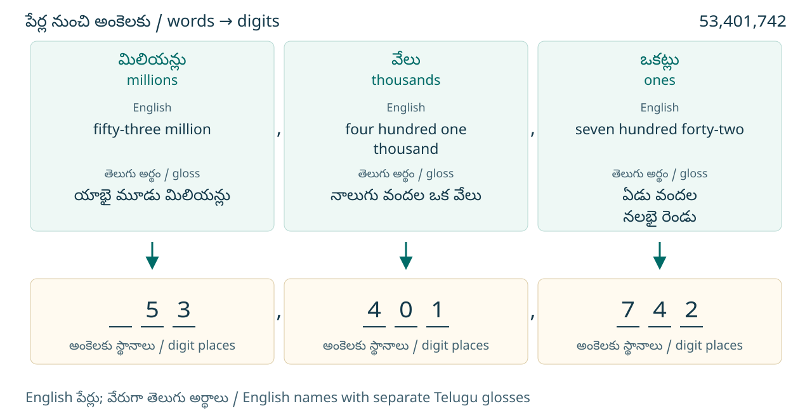
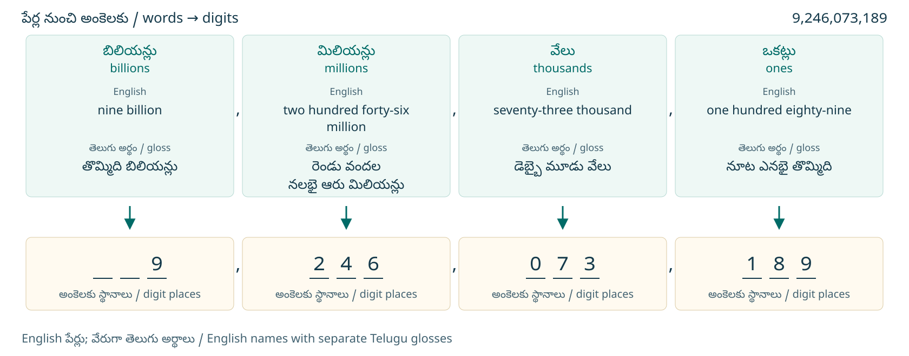
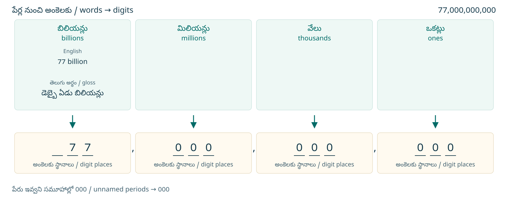
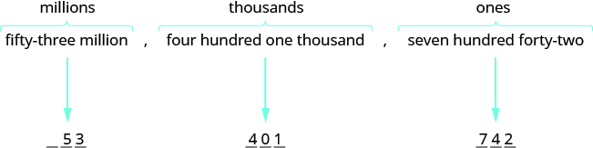
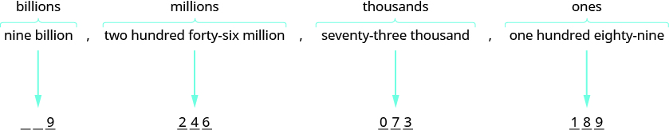
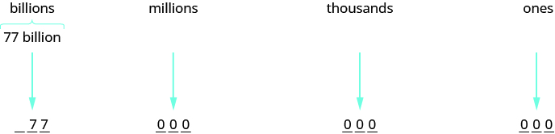

మూలపాఠం అనువాదం · Telugu source translation
స్థాన విలువ ఆధారంగా పూర్ణాంకాలను అంకెలలో రాయడం
ఇప్పుడు ఈ ప్రక్రియను తిరగేసి, అక్షరాలలో ఇచ్చిన సంఖ్యను అంకెలలో రాద్దాం.
కింది సంఖ్యలను అంకెలలో రాయండి.
- ⓐ యాభై మూడు మిలియన్ల, నాలుగు వందల ఒక వేల, ఏడు వందల నలభై రెండు. మూల ఇంగ్లీషు పేరు: fifty-three million, four hundred one thousand, seven hundred forty-two
- ⓑ తొమ్మిది బిలియన్ల, రెండు వందల నలభై ఆరు మిలియన్ల, డెబ్బై మూడు వేల, నూట ఎనభై తొమ్మిది. మూల ఇంగ్లీషు పేరు: nine billion, two hundred forty-six million, seventy-three thousand, one hundred eighty-nine
సాధన — Solution
ⓐ సమూహాలను సూచించే పదాలను గుర్తించండి.
ఎడమవైపు మొదటి సమూహం మినహా, మిగతా సమూహాలన్నింటిలో మూడు స్థానాలు ఉండాలి. ఒక్కో సమూహంలో అవసరమైన స్థానాలను సూచించడానికి మూడు ఖాళీలు గీయండి. సమూహాల మధ్య కామాలు పెట్టండి.
అన్ని నిలువు వరుసలను చూడటానికి పటాన్ని అడ్డంగా జరపండి.

కామాలతో సహా సమూహాలను కలిపి రాయండి. సంఖ్య
ⓑ సమూహాలను సూచించే పదాలను గుర్తించండి.
ఎడమవైపు మొదటి సమూహం మినహా, మిగతా సమూహాలన్నింటిలో మూడు స్థానాలు ఉండాలి. ఒక్కో సమూహంలో అవసరమైన స్థానాలను సూచించడానికి మూడు ఖాళీలు గీయండి. సమూహాల మధ్య కామాలు పెట్టండి.
అన్ని నిలువు వరుసలను చూడటానికి పటాన్ని అడ్డంగా జరపండి.

సంఖ్య
భాగం ⓑ లో వంద వేల స్థానాన్ని నిలిపి ఉంచడానికి 0 అవసరమైందని గమనించండి. ఎడమవైపు మొదటి సమూహం మినహా, మిగతా ప్రతి సమూహంలో మూడు స్థానాలు ఉండేలా అవసరమైన చోట సున్నాలు రాయండి.
ఒక రాష్ట్ర బడ్జెట్ సుమారు బిలియన్ డాలర్లు. బడ్జెట్ మొత్తాన్ని సాధారణ అంకెల రూపంలో రాయండి.
సాధన — Solution
అన్ని నిలువు వరుసలను చూడటానికి పటాన్ని అడ్డంగా జరపండి.

కాబట్టి బడ్జెట్ సుమారు
పేరు నుంచి సమూహాలకు, సమూహాల నుంచి సంఖ్యకు
ఈ భాగంలోని వివరణలు, ప్రారంభ ప్రశ్నలు, మళ్లీ-తనిఖీ ప్రశ్నలు, విస్తృత సాధనలు తెలుగు–English సేతువు కోసం కొత్తగా రాసినవి. ఇవి OpenStax మూలపాఠంలో భాగం కావు; తరగతిని నిర్ణయించే ప్రమాణీకృత పరీక్ష కూడా కావు. జవాబుతో పాటు కారణం చెప్పండి లేదా రాయండి. చదవడంలో సహాయం ఇవ్వవచ్చు; గణిత జవాబు చెప్పకూడదు. కాల పరిమితి లేదు; వ్యక్తిగత సమాచారం సేకరించము.
ఒక్కో సమూహంలోని సంఖ్యను ముందుగా గుర్తించండి
four hundred one అంటే 400 + 1 = 401. కాబట్టి four hundred one thousand అంటే వేల సమూహంలో 401 అని అర్థం: 401 × 1,000 = 401,000. అదే seventy-three thousand లో సమూహంలోని సంఖ్య 73. మొత్తం సంఖ్యలో ఆ వేల సమూహం ఎడమ చివరిది కాకపోతే 073 అని మూడు అంకెలతో రాయాలి. 073 విలువ 73; మొదటి 0 ఆ సమూహంలోని వందల స్థానాన్ని, అంటే మొత్తం సంఖ్యలో వంద వేల స్థానాన్ని, నిలిపి ఉంచుతుంది.
సంఖ్యా పేరులో ఒక మధ్య సమూహం లేకపోతే దానికి 000 రాయండి. ఉదాహరణకు మూడు మిలియన్ల, ఐదు అంటే సమూహాలు 3 | 000 | 005; సంఖ్య 3,000,005. దీని విస్తరణ 3 × 1,000,000 + 0 × 1,000 + 5 = 3,000,005. సున్నా సమూహం సంఖ్యకు విలువను కలపకపోయినా, ఇతర అంకెల స్థానాలను నిలిపి ఉంచుతుంది. రాసిన సంఖ్యను తిరిగి సమూహాలుగా చదివి, ఇచ్చిన పేరుతో సరిపోతుందో తనిఖీ చేయండి.
ముందుగా మీరే ప్రయత్నించండి · Entry check
కింది డబ్బు, కొలతల వివరాలు ఈ కొత్త సాధన కోసం ఇచ్చిన ఉదాహరణలు. ప్రతి ప్రశ్నలో సమూహాలను చూపి, అవసరమైన సున్నాలను ఎందుకు రాశారో వివరించండి.
- D01 · K1 ఆరు మిలియన్ల, ఇరవై నాలుగు వేల, తొమ్మిది — six million, twenty-four thousand, nine — ను అంకెలలో రాయండి.
- D02 · K1 మూడు బిలియన్ల, నలభై రెండు మిలియన్ల, ఐదు వేల, ఎనిమిది వందలు — three billion, forty-two million, five thousand, eight hundred — ను అంకెలలో రాయండి.
- D03 · K2 ఒక సాధనలో మొత్తం రెండు బిలియన్ల, ఐదు వేల అమెరికా డాలర్లు అని ఉంది. $ గుర్తుతో అంకెలలో రాయండి. ఏ సమూహాల పేర్లు ఇవ్వలేదో, వాటిని ఎలా పూరించారో చెప్పండి.
- D04 · K2 ఒక సాధనలో బరువును 5 million pounds అని ఇచ్చారు. పౌండ్లలోనే అంకెల రూపంలో రాయండి. ఎన్ని పూర్తి సున్నా సమూహాలు అవసరమో వివరించండి.
జవాబుల ఆధారంగా తదుపరి అడుగు
K1 = D01–D02: ఇచ్చిన పేరులోని సంఖ్యలను సరైన సమూహాల్లో అమర్చడం. K2 = D03–D04: ఇవ్వని సమూహాలను సున్నాలతో పూరించి, డబ్బు లేదా కొలత ప్రమాణాన్ని నిలిపి ఉంచడం. ఒక ప్రశ్నలోని అన్ని భాగాలకూ జవాబులు, కారణాలు సరిగ్గా ఉంటే 1 ఇవ్వండి. కారణం లేకపోతే వివరణ అడగండి; ప్రస్తుతానికి 0 గా గుర్తించండి. ఒక్కో నైపుణ్యంలో 2/2 వస్తే నేరుగా సంబంధిత మళ్లీ-తనిఖీకి వెళ్లండి. 0/2 లేదా 1/2 వస్తే సంబంధిత సహాయం చదివి, తరువాత మళ్లీ తనిఖీ చేయండి.
మళ్లీ-తనిఖీలో K1 = R01–R02; K2 = R03–R04. సంబంధిత రెండు ప్రశ్నలనూ కారణాలతో సరిగ్గా చేసినప్పుడు ఆ నైపుణ్యం ఈ చిన్న యూనిట్కు సిద్ధమైనట్లు గుర్తించండి. మొదటి ప్రయత్నంలో తక్కువ మార్కులు రావడం, సహాయం తరువాత సిద్ధం కావడానికి అడ్డంకి కాదు. రెండు నైపుణ్యాలూ సిద్ధమైతే తదుపరి పాఠానికి వెళ్లండి; లేకపోతే అవసరమైన సహాయం, సాధన మళ్లీ తీసుకోండి. మొత్తం మార్కులతో ఒక నైపుణ్యంలోని లోటును దాచవద్దు.
For each skill, an entry score of 2/2 leads directly to recheck; 0/2 or 1/2 leads to its support first. Readiness requires both corresponding recheck items correct in every part, with explanations. This is an editorial teaching rule, not a validated grade-placement threshold. The reader stores no answers.
- K1 · సమూహంలో చెప్పిన సంఖ్యను ముందుగా విడిగా రాయండి
- మొదట సమూహాల పేర్లను క్రమంలో పెట్టండి. ప్రతి సమూహంలో చెప్పిన చిన్న సంఖ్యను విడిగా రాయండి. తరువాత ఎడమ చివరి సమూహం తప్ప మిగతా సమూహాలను మూడు అంకెలుగా చేయండి: 24 ను 024 గా, 9 ను 009 గా రాయవచ్చు. సమూహాన్ని మూడు అంకెలుగా చేయడానికి అవసరమైన సున్నాలు ఎడమవైపునే చేరుస్తాం. 24 ను 240 గా మార్చితే విలువ మారుతుంది.
- K2 · చెప్పని సమూహాన్ని 000 తో చూపండి
- బిలియన్ల తరువాత మిలియన్లు, తరువాత వేలు, తరువాత ఒకట్లు వస్తాయి. పూర్తిగా చెప్పని సమూహం స్థానంలో 000 రాయండి; ఆ సమూహాన్ని తొలగించవద్దు. మూల బడ్జెట్ ఉదాహరణలో 77 బిలియన్లు అంటే 77 | 000 | 000 | 000, అంటే $77,000,000,000. చివర డబ్బు గుర్తు లేదా కొలత ప్రమాణం సరైనదో తనిఖీ చేయండి. సంఖ్యను అంకెలలో రాయడం మాత్రమే జరుగుతోంది; ప్రమాణం మారడం లేదు.
ప్రారంభ ప్రశ్నల పూర్తి సాధనలు
- D01: మిలియన్ల సమూహం 6; వేల సమూహం 24 ను 024 గా; ఒకట్ల సమూహం 9 ను 009 గా రాయాలి. సమూహాలు 6 | 024 | 009. కాబట్టి జవాబు 6,024,009. విస్తరణ 6,000,000 + 24,000 + 9 = 6,024,009. 024, 009 లోని సున్నాలు మిగతా అంకెలను సరైన స్థానాల్లో ఉంచుతాయి.
- D02: సమూహాలు బిలియన్లు | మిలియన్లు | వేలు | ఒకట్లు. వాటిలో 3 | 042 | 005 | 800 రాయాలి. కాబట్టి 3,042,005,800. విస్తరణ 3,000,000,000 + 42,000,000 + 5,000 + 800 = 3,042,005,800. 42, 5 ఉన్న సమూహాలను ఎడమవైపు సున్నాలతో మూడు అంకెలుగా చేశాం; మొదటి సమూహం 3 గానే ఉంటుంది.
- D03: రెండు బిలియన్లు, ఐదు వేలు మాత్రమే ఇచ్చారు. మిలియన్ల, ఒకట్ల సమూహాలను ఇవ్వలేదు; వాటిలో 000 రాయాలి. వేల సమూహం 005. సమూహాలు 2 | 000 | 005 | 000. జవాబు $2,000,005,000. 2,000,000,000 + 5,000 = 2,000,005,000. అమెరికా డాలర్ల గుర్తు $ అలాగే ఉంచాం.
- D04: 5 మిలియన్ల తరువాత వేల, ఒకట్ల సమూహాలు రెండూ 000. సమూహాలు 5 | 000 | 000. 5 × 1,000,000 = 5,000,000 కాబట్టి జవాబు 5,000,000 పౌండ్లు. రెండు పూర్తి సున్నా సమూహాలు, అంటే మొత్తం ఆరు చివరి సున్నాలు ఉన్నాయి. బరువు ప్రమాణాన్ని మార్చలేదు.
మళ్లీ తనిఖీ · Recheck
ప్రతి ప్రశ్నలో సమూహాలనూ సున్నాల కారణాన్నీ చూపండి.
- R01 · K1 ఎనిమిది మిలియన్ల, ముప్పై ఏడు వేల, ఆరు — eight million, thirty-seven thousand, six — ను అంకెలలో రాయండి.
- R02 · K1 నాలుగు బిలియన్ల, యాభై మూడు మిలియన్ల, ఏడు వేల, తొమ్మిది వందలు — four billion, fifty-three million, seven thousand, nine hundred — ను అంకెలలో రాయండి.
- R03 · K2 ఒక సాధనలో మొత్తం ఆరు బిలియన్ల, ఏడు వేల అమెరికా డాలర్లు అని ఉంది. $ గుర్తుతో అంకెలలో రాయండి. ఇవ్వని సమూహాలను ఎలా పూరించారో చెప్పండి.
- R04 · K2 ఒక సాధనలో దూరాన్ని 18 million miles అని ఇచ్చారు. మైళ్లలోనే అంకెల రూపంలో రాయండి. పూర్తి సున్నా సమూహాలను చూపండి.
మళ్లీ-తనిఖీ పూర్తి సాధనలు
- R01: సమూహాలు 8 | 037 | 006. 37 ను 037 గా, 6 ను 006 గా రాసి మూడు స్థానాలనూ నిలిపాం. 8,000,000 + 37,000 + 6 = 8,037,006. కాబట్టి జవాబు 8,037,006.
- R02: బిలియన్ల నుంచి ఒకట్ల వరకు 4 | 053 | 007 | 900. 53, 7 ఉన్న సమూహాలను మూడు అంకెలుగా చేశాం. 4,000,000,000 + 53,000,000 + 7,000 + 900 = 4,053,007,900. కాబట్టి జవాబు 4,053,007,900.
- R03: బిలియన్ల సమూహం 6, వేల సమూహం 007. ఇవ్వని మిలియన్ల, ఒకట్ల సమూహాల్లో 000 రాయాలి. 6 | 000 | 007 | 000 నుంచి $6,000,007,000 వస్తుంది. 6,000,000,000 + 7,000 = 6,000,007,000; డాలర్ల గుర్తు $ అలాగే ఉంటుంది.
- R04: మిలియన్ల సమూహం 18. దాని తరువాత వేల, ఒకట్ల సమూహాలు రెండూ 000. 18 | 000 | 000; 18 × 1,000,000 = 18,000,000. జవాబు 18,000,000 మైళ్లు. సంఖ్య పేరును మాత్రమే అంకెలలోకి మార్చాం; దూరం ప్రమాణాన్ని మార్చలేదు.
మూలపాఠపు నాలుగు ప్రయత్నాలకు అదనపు పూర్తి వివరణలు
యాభై మూడు మిలియన్ల, ఎనిమిది వందల తొమ్మిది వేల, యాభై ఒకటి
మూల ప్రశ్న fs-id2646708: fifty-three million నుంచి మిలియన్ల సమూహం 53. eight hundred nine thousand నుంచి వేల సమూహం 809. fifty-one నుంచి ఒకట్ల సమూహం 51; ఇది మొదటి సమూహం కాదు కాబట్టి 051 గా రాయాలి. సమూహాలు 53 | 809 | 051. జవాబు 53,809,051.
తిరిగి తనిఖీ: 53 × 1,000,000 + 809 × 1,000 + 51 = 53,000,000 + 809,000 + 51 = 53,809,051. 809 లోని 0 మొత్తం సంఖ్యలో పది వేల స్థానంలో ఉంది; 051 లోని 0 వందల స్థానంలో ఉంది. రెండు సున్నాలూ తమ స్థానాలను నిలిపి ఉంచుతాయి; వాటి స్థాన విలువలు మాత్రం సున్నా.
రెండు బిలియన్ల, ఇరవై రెండు మిలియన్ల, ఏడు వందల పద్నాలుగు వేల, నాలుగు వందల అరవై ఆరు
మూల ప్రశ్న fs-id2202956: two billion నుంచి 2; twenty-two million నుంచి 22; seven hundred fourteen thousand నుంచి 714; four hundred sixty-six నుంచి 466. మిలియన్ల సమూహంలో 22 ను 022 గా రాయాలి. సమూహాలు 2 | 022 | 714 | 466. జవాబు 2,022,714,466.
విస్తరణతో తనిఖీ: 2 × 1,000,000,000 + 22 × 1,000,000 + 714 × 1,000 + 466 = 2,000,000,000 + 22,000,000 + 714,000 + 466 = 2,022,714,466. 022 లో మొదటి 0 వంద మిలియన్ల స్థానాన్ని నిలిపి ఉంచుతుంది; 22 మిలియన్లను 220 మిలియన్లుగా మార్చడం లేదు.
మూల ప్రశ్నలో ఇచ్చిన సుమారు 34 మిలియన్ మైళ్లు
మూల ప్రశ్న fs-id1485641: మిలియన్ల సమూహం 34; వేల, ఒకట్ల సమూహాలు 000. సమూహాలు 34 | 000 | 000. 34 × 1,000,000 = 34,000,000. మూల జవాబు 34,000,000 మైళ్లు. ప్రశ్నలో సుమారు అని ఉంది కాబట్టి సందర్భంలో ఇది సుమారు 34,000,000 మైళ్ల దూరం; అంకెలుగా రాయడం వల్ల ఖచ్చితమైన కొత్త కొలత కాలేదు.
మూల ప్రశ్నలో ఇచ్చిన 204 మిలియన్ పౌండ్లు
మూల ప్రశ్న fs-id2133886: మిలియన్ల సమూహం 204. వేల, ఒకట్ల సమూహాలకు 000 రాయాలి. సమూహాలు 204 | 000 | 000. 204 × 1,000,000 = 204,000,000. జవాబు 204,000,000 పౌండ్లు. 204 లోని మధ్య 0 పది మిలియన్ల స్థానంలో ఉంటుంది; దాన్ని తొలగించకూడదు. ఇచ్చిన పౌండ్లనే ఉంచాం; ఇది కిలోగ్రాములకు మార్పిడి కాదు.
Read the parallel canonical English subsection
Use Place Value to Write Whole Numbers
We will now reverse the process and write a number given in words as digits.
Write the following numbers using digits.
- ⓐ fifty-three million, four hundred one thousand, seven hundred forty-two
- ⓑ nine billion, two hundred forty-six million, seventy-three thousand, one hundred eighty-nine
Solution
ⓐ Identify the words that indicate periods.
Except for the first period, all other periods must have three places. Draw three blanks to indicate the number of places needed in each period. Separate the periods by commas.
Scroll sideways to inspect every column.

Put the numbers together, including the commas. The number is
ⓑ Identify the words that indicate periods.
Except for the first period, all other periods must have three places. Draw three blanks to indicate the number of places needed in each period. Separate the periods by commas.
Scroll sideways to inspect every column.

The number is
Notice that in part ⓑ , a zero was needed as a place-holder in the hundred thousands place. Be sure to write zeros as needed to make sure that each period, except possibly the first, has three places.
A state budget was about billion. Write the budget in standard form.
Solution
Scroll sideways to inspect every column.

So the budget was about